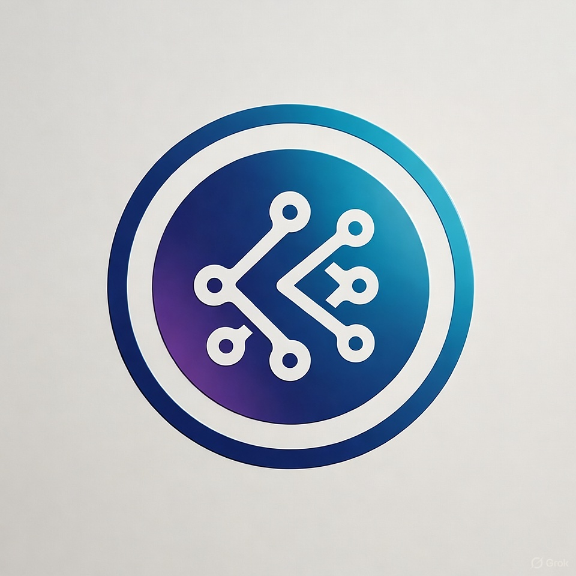

Site Name
Site Name: Kiriku
I chose the name "Kiriku" for my site because it reminds me of a brave boy who explored unknown concepts and educated his tribe with the knowledge he gained. And the purpose of the website is to reflect the next frontier of Web 3 and educate new commers.
Optional Domain: Kiriku.org
Site Purpose
The purpose of this website is to educate beginners about Web3 by explaining its core concepts, technologies, and real-world applications. It aims to simplify complex ideas such as blockchain, smart contracts, and decentralized apps (dApps) through clear explanations, visuals, and examples. The site will also include a section on cryptocurrency basics, digital wallets, and a resources/FAQ page for deeper learning.
Scenarios
- What is the difference between Web2 and Web3?
- How do smart contracts work and where are they used?
- What do I need to start using decentralized applications (dApps)?
- Where can I find reliable resources to learn more about blockchain and Web3?
Color Schema
Primary Color: #20306D - used for headings and navigation elements.
Secondary Color: #4E6396 - used for buttons and highlights.
Background Accent: #D9DCE8 - used for light background sections.
Typography
Heading Font: Roboto Sans-serfi.
Body Font: Roboto Sans-serfi
Wireframe
The wireframes below outline the homepage layout for both mobile and desktop views.